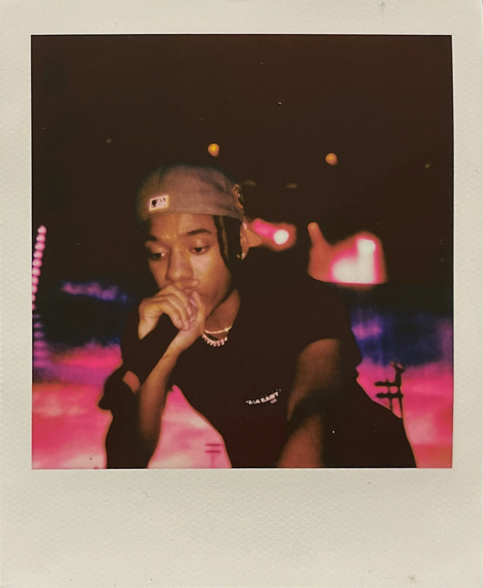
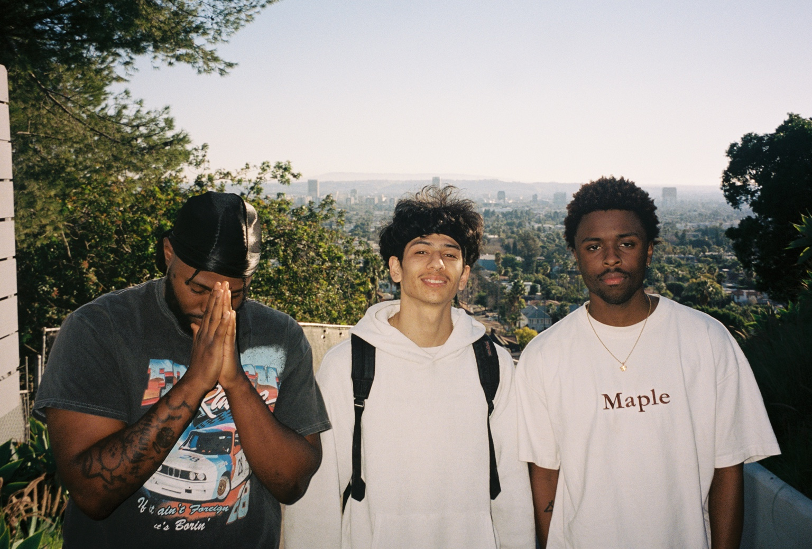
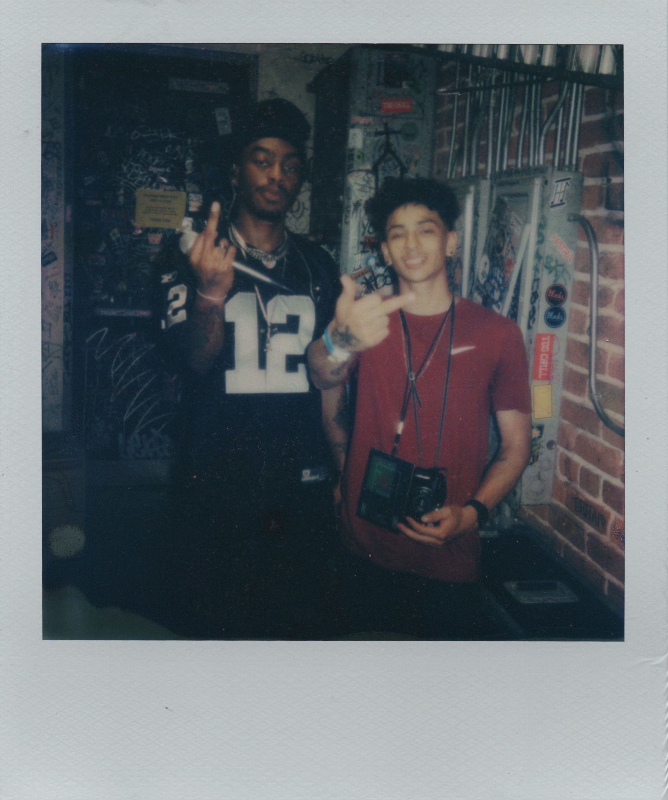
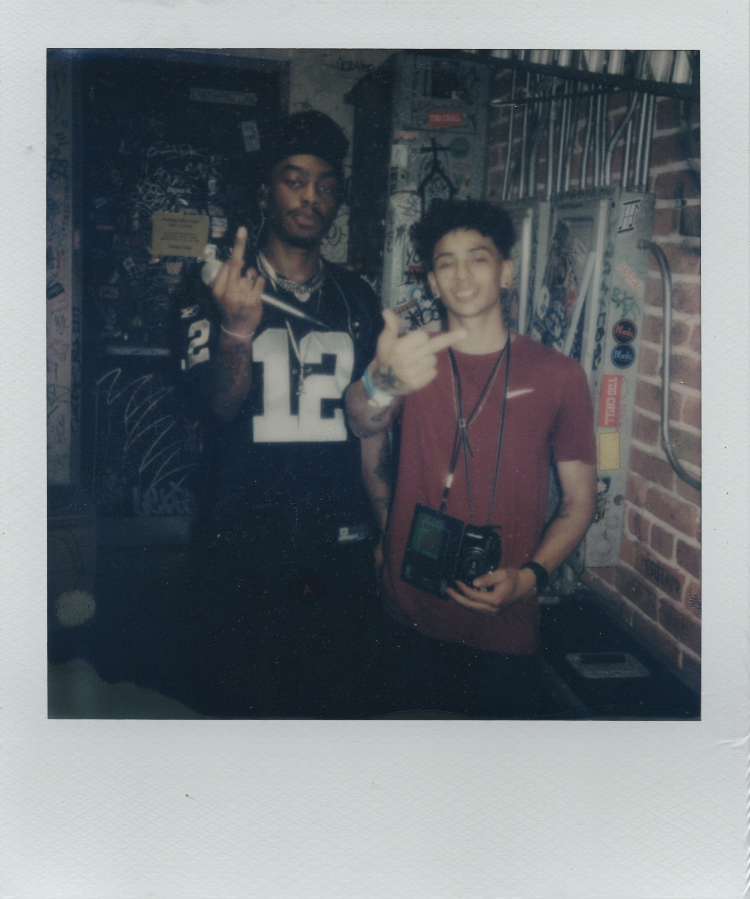
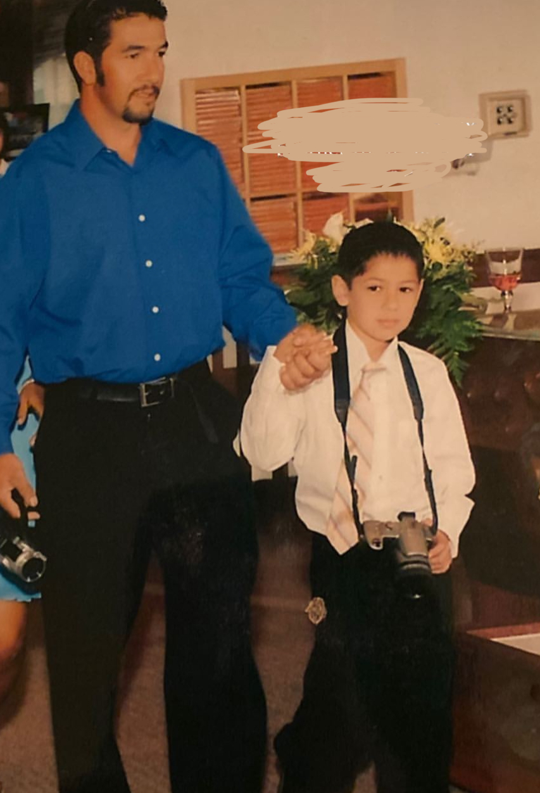
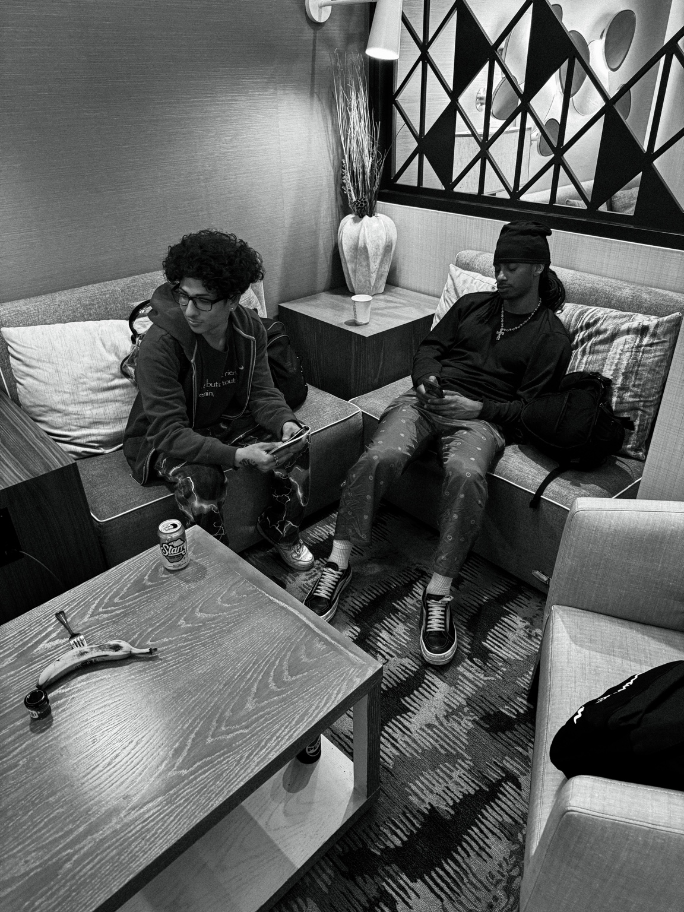

where did it all begin?
you’re originally from salinas, california. how much do you feel your upbringing there influenced who you are creatively?
I wouldn’t say Salinas shaped me too much because I didn’t grow up there for the majority of my life. I left around the age of eight to live with my dad in Sacramento.
One thing I can say definitely influenced me creatively was hearing Chris Brown, T-Pain, and Kanye West on the radio all the time. Specifically 102.5. I don’t even know if that station is still a thing out there.
Watching BET, VH1, and MTV also played a huge part in making me fall in love with music & everything surrounding it.
the internet became the first creative space
when did you first start becoming involved in music beyond just being a fan?
Probably around the age of 17. I was on a music forum formerly called KanyeToThe.com, & there was this “Golfwang Leak” thread where people would post Tyler, The Creator leaks.
The original poster’s Instagram handle for his leak account was @golfwanginsider, & that inspired me to make a leak/fan page for Bryson Tiller called @tillerinsider. I was already keeping up with everything Bryson-related and finding information around the internet, so it felt natural.
I also set up an interview between SwaVay and a blogger on KTT who now works for Complex. That interview actually still exists to this day somewhere on YouTube.
Even then, I still didn’t know I wanted to participate in creating. I was just doing things because I was genuinely interested.
what did running that fan page teach you?
It became the foundation for everything that came after.
I was able to build a community around Bryson Tiller and some of his affiliates at the time, like Ryan Trey & Che Ecru. Eventually, I got tapped in with Bryson Tiller's camp, especially his best friend Swan. He is one person I can always go to for advice on the deeper end of stuff in the industry. He's very knowledgeable & a veteran in the space I'm in.

Being young & having that kind of access made everything feel possible. It didn’t feel far out of reach. I believed in what I was building, & I felt like I had nothing to lose by getting involved in whatever I could.
Some things might not work. But you have to fail to discover what actually works.
finding a place in the music world
how did monroe jordan enter the picture?
At the beginning of 2019, I met Monroe Jordan through the Bryson Tiller community. I found his music through another Bryson fan’s Instagram Story, & I instantly loved his sound.
I reached out & told him his music was dope. Later that summer, we started talking more & playing Apex Legends on Xbox, and that turned into an instant friendship. Swan was also in the mix playing Apex with us which made things feel more in reach.
I knew I could somehow get myself involved in this music space & detach myself from the whole Bryson Tiller fan-page.
The following year, I introduced Monroe to Devon, a producer who had worked on Ryan Trey’s first project "August". Monroe called me later that day & told me they clicked instantly.
I remember being so geeked when he told me Devon was cooking up most of his first EP, "ZEN". That’s when I really started feeling like I belonged in this space.
Maybe I didn’t have a specific role, but I knew I could wear all the hats. Even if I wasn’t experienced in everything yet.

chase shakur
you’ve also worked very closely with chase shakur. how did that relationship develop?
I met Chase through Monroe around 2020 and instantly became a fan of his music. Me and my homie Janson used to post Monroe’s & Chase’s music through this music blog he ran called eleven0seven.
Chase’s career started to rise in 2022, and I continued supporting him throughout the years while keeping a close relationship with his manager, Jono.
In 2023, I was fortunate enough to shoot for Chase in San Francisco. I also had the opportunity to talk to Jono about some of my previous endeavors, including the Bryson fan page, & that caught his attention.

I eventually started managing Chase’s fan pages, using a lot of the knowledge I had already gained from running the Bryson page.
But beyond that, I really gravitated toward Chase’s visual aesthetic. A lot of the ideas we have naturally exist in the same space. We’re like-minded & draw inspiration from similar places, so the work flows pretty easily.
I’ve learned a lot about what I’m capable of since I’ve started working with him. I definitely want to continue growing with this team.

picking up a camera
did your relationship with cameras start earlier than your career as a creative?
I actually first picked up a camera when I was eight years old.
My dad would make me hold his camera for him, so that’s really how I got my first feel for a camera. As time went on, I became curious about how to actually use it. I never thought I’d end up falling in love with cameras ten years later.

when did you start taking photography seriously?
Around 2021 or 2022, I was shooting Polaroids just for fun. I even shot some at a Ryan Trey show in Los Angeles and ended up getting reposted.
But what really made me think, “wow, I need to start shooting for real,” was early 2023.
Monroe was coming to Los Angeles for some studio sessions, & around the same time, Kristo reached out because he was also in LA. I had met Kristo on Discord a few months earlier & was slowly getting to know him because he was a creative himself.
He came to our sessions & brought a Sony Hi8 Handycam. He let me use it, & I instantly fell in love with it. I filmed a few clips while we were there & knew immediately that I needed to buy one.
there was also another piece of inspiration behind your love for vintage cameras.
Yeah. In 2022, I watched jeen-yuhs, the documentary by Coodie & Kanye West.
The way that documentary was made and the feeling it gave me was unlike anything else. It made you feel like you were actually living in those moments from the early 2000s. A lot of it was shot on a GL2, & there was something about that footage that felt so real.
From that point on, I knew I wanted to get into vintage camcorders & document moments.
Plus, they’re pretty easy to use in my opinion.
what did you actually want to document?
I knew I’d film things in the music world, but for the most part, I wanted to shoot anything.
Priceless moments.
That’s really still the mindset.
I want people to have the opportunity to look back at footage ten years from now & actually feel that moment when they watch it. I want there to be a real sense of nostalgia.
Digital cameras don’t really give you that feeling in the same way anymore.
the people behind the work
how important have your relationships with other creatives been to your evolution?
Extremely important.
I feel like my peers & I all feed off each other in some way. I give my flowers to my peers when I can. A lot of these people inspire me, & I hope I inspire them too.
Some of my peers that inspire me is Benji (@benjiallenn), Brandon (@brandonmaciel_), Alex (@vess.ed) & Prince (@unfollowprince).
is there anyone in particular that you feel had a huge impact in your evolution?
One of the important people in my evolution is Kristo. There were moments where I felt like I had nothing, & he showed me how much I was actually capable of.
All I had to do was take action.
I look back at some of our old conversations now and realize, “wow, he was right.”

I can’t even imagine how things would have turned out without the people I’ve met along the way. It’s really a butterfly effect.
Every time I see my peers progress, it makes me want to go harder.
organically molded
at some point, all of these different things started coming together. when did organically molded become the idea?
At the beginning of this year, I was outside pretty often creating nightlife VHS videos at clubs. I started piecing everything together & realized that everything I was doing could exist under one thing: organically molded.
I’d actually had that name thought out since Fall 2023.
Eventually, I started building different mediums under the same umbrella. There’s @shootingvhs, @shootingin35mm, @musicrelatedwork, & some other things I might explore.
what does organically molded mean to you?
To me, it means being built or put together organically. No predetermined mold.
I haven’t even made a logo for it yet, but I can already visualize it. Something involving a plant, palms or hands, & someone molding a pot out of clay.
The idea is that everything is being shaped naturally.
what visually attracts you?
A cinematic feel or aesthetic definitely catches my eye.
Minimalism, but minimalism that speaks loud.
Donald Glover’s work is a huge influence on me.
His work intertwines with everything. Look at him: he’s a director, actor, musician, producer, writer, comedian. In everything he works in, it feels coded. You know it’s his work when you see it.
It all feels like it’s part of one world that he’s built.
I can’t say I want to do everything he’s done, but I definitely want to see how far I can take things.
building something bigger
what do you see organically molded becoming?
I see it becoming a creative haven for like-minded people once I have everything figured out. Almost like a creative incubator.
I want to create jobs within it. I can see organically molded being capable of working on big-budget projects for major record labels. Having a full production crew would be sick. I want to have you involved in it too as you already know
I have a lot of it thought out already.
I also don’t want to take on projects just because they’re available. I never want to run projects that aren’t suited for organically molded.
I want there to be some exclusiveness when it comes to working with organically molded. I want to do select projects — essentially, projects that get tossed my way and that I genuinely want to accept.
Not everything aligns with me, organically molded, or its visual identity.
what doesn’t align with you?
Anything that feels unintentional, lazy, or is just out of range of what I align myself with.
It’s hard to explain sometimes, but I know when something isn’t suited for organically molded.
what’s next?
you’ve mentioned wanting to direct a short film. what does that look like?
I really want to direct a short film within the next three years.
I don’t have the entire story figured out yet, but I know I want it to be cinematic. Serious, but also comedic.
Something where you can have a really dramatic moment & then completely break the tension with something funny.
Kind of like that scene in Scarface where Tony Montana kills Frank & everything is extremely dramatic, and then he turns around and asks Earnie, “you want a job, Earnie?”
That’s the kind of contrast I like.
where do you see yourself a few years from now?
Honestly, I don’t even know.
I could imagine being able to say that I traveled across the country doing different creative things with the people I love working with.
I might have already expanded organically molded into something crazier by then.
I just want to keep creating.
the next generation
what would you tell a younger creative who’s where you were a few years ago?
Pick up a damn camera.
Just kidding.
Well, actually — yes. Pick up a damn camera.
But I’d also tell them to ask a lot questions. Learn. Consume.
& remember that worst answer you can get from anybody is no.
Be relentless.
I want to give people the knowledge & resources that I wish I had when I was younger.
I want the youth to take advantage of their time & outdo me. I started kind of late. There are kids who can start incredibly young & surpass where I’m at by the time they’re 25.
I want to be an inspiration for the next generation of creatives, especially within the music space — specifically R&B. A Rick Rubin of some sort.
As for me, I’m a creator who has everything in his hands.
I just need a little bit of organizing in all aspects.
& I’m about to be 26, so I kind of need to get it all together haha
Thank you for your time Fernando
Nah thank you babe, you did great! We went pretty in depth with all of this